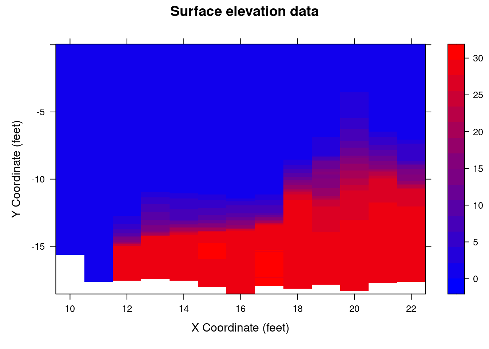
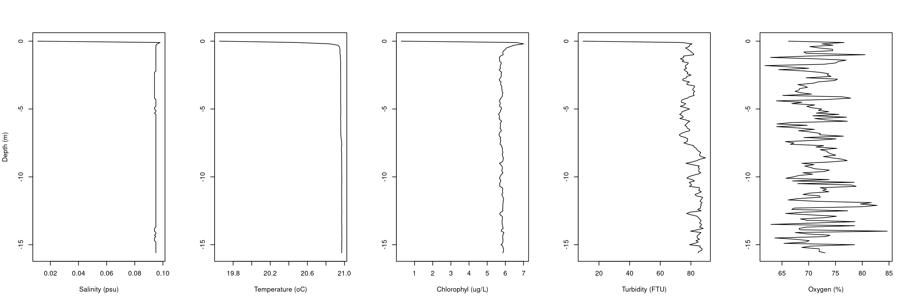

pasta_ctd=('/home/mauricio/Dropbox/Projetos/Programacao em Python e R - 2021/Analise Dados/CTD/csv')CTD
Primeiramente, todos os arquivos devem ser salvos em uma pasta.
Dois pacotes devem ser carregados. Se der erro tem que instalar os pacotes.
library(readr)
library(lattice)Armazenando os caminhos dos arquivos na variável arquivos_csv
arquivos_csv=list.files(pasta_ctd,pattern = '*.Csv',full.names = T)Criando dataframes vazios.
arquivos_txt=c()
dadosF=c()Lendo cada arquivo Csv e escrevendo uma tabela com a datahora.
for (i in 1:length(arquivos_csv)) {
ArqCabeca=read_lines(arquivos_csv[i],skip=0,n_max=16)
datahora=substr(ArqCabeca[15],11,29) #Tira da linha 15 o valor
ArqDados=read_lines(arquivos_csv[i], skip=43)
arquivos_txt[i]=gsub('Csv','txt',arquivos_csv[i])
write_lines(ArqDados,arquivos_txt[i])
dados=read.csv(arquivos_txt[i], header = T)
dados$datahora=datahora
dados$tempo=as.POSIXct(dados$datahora,format = "%Y/%m/%d %H:%M:%S")
if (i==1) {
dadosF = dados
} else {
dadosF = rbind(dadosF,dados)
}
}Quem faz a mágica é o pacote Lattice. Há como melhorar a interpolação usando o próprio pacote.
levelplot(dadosF$Sal..... ~ as.numeric(format(dadosF$tempo,"%H"))*-dadosF$Depth..m.,
data = dadosF,
xlab = "X Coordinate (feet)", ylab = "Y Coordinate (feet)",
main = "Surface elevation data",
col.regions = colorRampPalette(c("blue","red"))(30))
Plotando gráficos de perfil de cada campanha.
dados=subset(dadosF,
as.numeric(format(dadosF$tempo,'%H'))==10)
par(mfrow=c(1,5))
plot(dados$Sal.....,-dados$Depth..m.,ty='l',
xlab='Salinity (psu)',
ylab='Depth (m)')
plot(dados$Temp...deg.C.,-dados$Depth..m.,ty='l',
xlab='Temperature (oC)',
ylab='')
plot(dados$Chl.a..ug.l.,-dados$Depth..m.,ty='l',
xlab='Chlorophyl (ug/L)',
ylab='')
plot(dados$Turb.M..FTU.,-dados$Depth..m.,ty='l',
xlab='Turbidity (FTU)',
ylab='')
plot(dados$DO....,-dados$Depth..m.,ty='l',
xlab='Oxygen (%)',
ylab='')